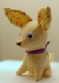

|
||
Premium Patterns Wintry Mix Mitts Love Bytes HawkeyeFree Patterns Kiddie Cadet Summerlin Ruffled Scarf Seamless DS Sock Simply Seamless Pouch Myriads of MushroomsExtras DIY Mitten Blocker Felt Patch Tutorial Yarn Dyeing Tutorial Needle Pouches Knitting Journal |
June 09, 2007 - Posted by Grace SchneblyAy, Chihuahua!For the past few days I have been trying to clean my apartment and get it ready for when Alice comes to visit. I don’t want to do just one of those surface cleans where you shove things in closets and under the bed, but I really want to go through stuff. I have yarn and fabric spilling out all over the place and I need to find actual places to store them. I definitely have an out of control yarn and fabric stash, but then again who doesn’t right?? Anyways while I was cleaning I came across this adorable little Chihuahua stuffy that I made about a year ago. Alice gave me Japanese crafting book called Palm-Sized Stuffies (ISBN#4834722449) for my birthday and it has a lot of really adorable patterns in it, but my favorite definitely has to be the set of little dogs. There are patterns for a Chihuahua, Jack Russell Terrier, Bull Terrier, Pug, Dachshund, and one more dog breed that I can’t identify. All of the instructions and descriptions in this book are in Japanese, but you defiantly don’t need to understand a word to be able to create these cute little toys. There are tons of color pictures which show each project really clearly, and there is even a step by step walkthrough, with color photos, on how to make the Chihuahua. The instructions for the rest of the projects are drawn and in black and white but are easy to understand. I think that this Chihuahua was the first thing that I had sewn in literally years, so that shows you how easy it was to make. I used just some cheapo acrylic craft felt for the body, and for the ears I used some vintage light weight cotton fabric that my mom gave me. It is stuffed with plain old polyfill; the whole thing cost me probably a quarter to make. It came together really quickly too, and I completed it in one evening. The Chihuahua ended up being about 4 inches tall (not including the ears), and is currently being used as a pin cushion. J I plan on making more of these guys because they are just too cute! I think that they would make great gifts too. I highly recommend this book. You definitely don’t need to know Japanese to understand the instructions, every stuffy is shown in multiple color pictures, and are so many great projects included! There are patterns for bears, bunnies, deer, cats, and of course those adorable dogs. I could definitely see enlarging the pattern pieces and making super sized animals too. I think that Alice ordered this book from yesasia.com, and that it was fairly inexpensive compared to some other Japanese crafting books. They also offer free shipping on orders over $25. So if you like to make cute little stuffed animals, then check out this book!! Finally I wanted keep up my tradition of sale spotting by telling you all that Knit Picks is having a yarn sale. Eleven of their yarn lines are on sale, including some colors of Merino Style. |
   Recent ReviewsRecent Posts
 Our Favorites
|
| © 2007 KathrynIvy.com | ||

{kind=link}
{kind=link}